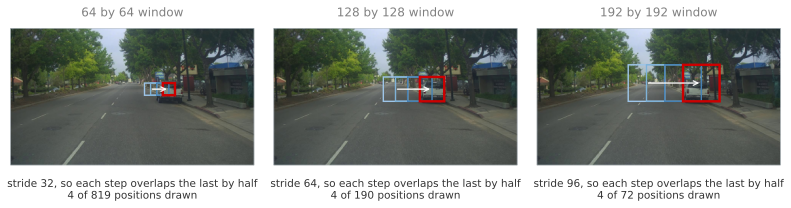
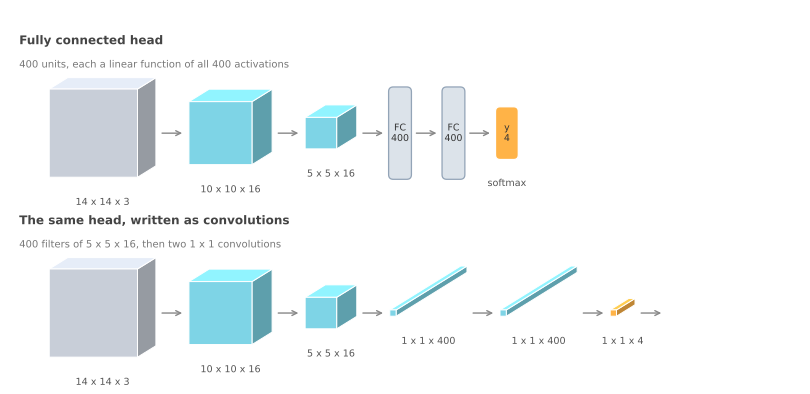
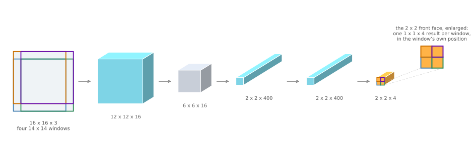
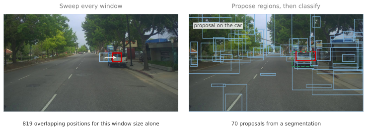

Sliding Windows and Region Proposals
deep-learning
convolutional-neural-networks
computer-vision
object-detection
sliding-windows
r-cnn
Why classifying every window in an image is too slow, how turning fully connected layers into convolutions collapses the sweep into one forward pass, and what region proposals do instead.
Object Localization built a network that finds one object and draws a box around it. Detection asks for all of them, and the number of objects is not known in advance, so a fixed output vector no longer fits the problem.
The oldest answer is also the most obvious one. If a classifier can say whether a small picture contains a car, run it on every small piece of a big picture and record where it says yes. That is sliding windows detection, and it works. It is also, done naively, far too slow to use, which is the interesting part, because the fix turns out to be a statement about convolutions rather than a faster computer.
Sliding Windows Detection
Start by building a classifier rather than a detector. The training set is made of closely cropped images, each one cut down so that the car fills nearly the whole frame, labelled 1, along with pictures containing no car, labelled 0. A ConvNet trained on that data answers one question about a small image, whether it is a car.
Now take a test image and pick a window size. Feed the region under the window into the ConvNet, record the answer, shift the window across by some stride, and repeat until the window has visited every position. Then do it again with a larger window, resizing each crop to whatever input size the ConvNet expects, and again with a larger one still. If a car is present at some position and scale, one of those crops should contain it, and the classifier should say so.
Each panel draws four successive positions of the window, the last one in red, with an arrow along the direction of travel. Consecutive positions overlap by half, which is what makes this a sweep rather than a tiling of the frame, and it is also why only four are drawn out of the number in the caption.
On this 1280 by 720 photograph, stepping the 64 pixel window by half its width takes 819 positions, and the two larger sizes add 190 and 72, so one sweep at that coarse setting is 1,081 crops. Cutting the step to 8 pixels, which is what a detector wanting decent localization would use, takes the 64 pixel window alone to 12,699 positions and all three sizes to 32,753. Every one of those is a separate forward pass through the ConvNet.
The stride is the only dial available, and it does not help. A coarse stride cuts the number of windows, but the window then lands further from where the object actually is, so the reported position gets worse and the classifier sees badly framed crops. A fine stride frames objects well and multiplies the cost.
This is worth putting in historical order, because sliding windows was not always a bad idea. Before neural networks took over, detectors used simple classifiers, often a linear function over hand engineered features. Each window cost almost nothing to evaluate, so sweeping thousands of them was ordinary practice and the method performed respectably. A ConvNet is a far better classifier and a far more expensive one, and running it thousands of times per image is infeasibly slow.
So the choice looks like a trade between accuracy and speed. It is not, and the next section explains why.
Review Questions
1. Why is the training set for a sliding windows classifier made of closely cropped images?
TipAnswer
Because that is what the classifier will be shown at test time. Each window hands it a small region that either frames an object tightly or contains no object at all, so the training data has to look the same, meaning positives cropped down to the object and negatives containing nothing of interest. A classifier trained on wide scenes containing a small car would learn to answer a different question, namely whether a car appears somewhere in a large picture, which says nothing about where.
1. Both a coarse stride and a fine stride cause a problem. What are the two problems, and why can a single stride value not avoid both?
TipAnswer
A coarse stride reduces the number of windows and therefore the cost, but the window grid becomes sparse, so no window frames the object well and the position that comes back is imprecise. A fine stride frames objects closely and localizes better, but the number of windows grows roughly with the square of the reduction in stride, and every window is a full ConvNet evaluation. The stride sets cost and localization accuracy at the same time and pulls them in opposite directions, so no single value escapes both.
1. Sliding windows worked acceptably before ConvNets. What changed?
TipAnswer
The cost of one classification. Earlier detectors ran a simple classifier, often linear, over hand engineered features, and evaluating it on a window was cheap enough that thousands of windows per image were affordable. A ConvNet classifies far more accurately and costs orders of magnitude more per evaluation, so the same sweep becomes impractical. The algorithm did not get worse, the thing being repeated got heavier.
Fully Connected Layers as Convolutions
The way out begins with an observation about the network itself, before any sliding happens. A fully connected layer can be written as a convolution, and once it is, the whole network becomes convolutional, which is what lets the sweep collapse.
Take a small classifier of the kind sliding windows would use. It accepts a 14 by 14 by 3 image, applies 16 filters of size 5 by 5, which gives 10 by 10 by 16, then a 2 by 2 max pooling, which gives 5 by 5 by 16. Two fully connected layers of 400 units follow, and a softmax outputs four numbers, one per class, for pedestrian, car, motorcycle, and background.
Now replace the first fully connected layer with a convolution. Use 400 filters, each of size 5 by 5 by 16, matching the volume exactly. A filter that covers the entire input has only one position to sit in, so each filter produces a single number, and 400 filters produce a 1 by 1 by 400 volume.
That is not an approximation of the fully connected layer. It is the same arithmetic. A fully connected unit computes one linear function of all \(5 \times 5 \times 16 = 400\) activations, and so does a filter of that size, so the two layers have the same parameters and produce the same values, only arranged as a volume rather than as a list.
The remaining layers convert the same way. The second fully connected layer becomes 400 filters of size 1 by 1, giving another 1 by 1 by 400, and the output layer becomes 4 filters of size 1 by 1 followed by the softmax, giving 1 by 1 by 4.

Nothing has been gained yet. The two networks compute the same four numbers from the same 14 by 14 input, at the same cost. What has changed is that the network no longer contains a layer that insists on a fixed input size, and that is what the next section spends.
Review Questions
1. Why does a convolution with 400 filters of size 5 by 5 by 16 produce a 1 by 1 by 400 volume rather than something larger?
TipAnswer
Because the filter is exactly as large as the volume it slides over. A 5 by 5 by 16 filter on a 5 by 5 by 16 input has one valid position, so each filter emits a single number, and 400 of them emit 400 numbers, arranged as a 1 by 1 by 400 volume. The convention that a filter always spans every channel is what makes the depth match, so the 16 in the filter and the 16 in the volume must be equal.
1. In what sense is the converted layer the same as the fully connected layer, rather than an approximation of it?
TipAnswer
In the exact sense. A fully connected unit computes a weighted sum of all \(5 \times 5 \times 16 = 400\) input activations plus a bias, and a 5 by 5 by 16 filter applied at its single valid position computes precisely the same weighted sum. The two layers have the same number of parameters and produce the same numbers for the same input. Only the shape of the output changes, from a list of 400 values to a 1 by 1 by 400 volume.
1. After the conversion, what stops the network from insisting on a 14 by 14 input?
TipAnswer
Nothing does, which is the point. A fully connected layer has a fixed number of weights tied to a fixed number of input activations, so the input size cannot change. A convolutional layer applies the same filter at every position that fits, so a larger input simply produces more positions and a larger output volume. Every layer in the converted network is now of that kind, so the network accepts any input at least as large as the one it was designed for.
One Pass Instead of Four
Now feed the converted network something bigger than it was trained on. The classifier expects 14 by 14, so consider a 16 by 16 test image, which contains four 14 by 14 windows at a stride of 2, one in each corner.
The naive method runs the ConvNet four times, once per window. Watch what the converted network does with the whole 16 by 16 image in a single pass. The first convolution gives 12 by 12 by 16, the max pooling gives 6 by 6 by 16, the 400 filters of size 5 by 5 give 2 by 2 by 400, the two 1 by 1 convolutions preserve that grid, and the output is 2 by 2 by 4.
That output is not four numbers, it is four sets of four numbers, and each set is exactly what the network would have produced for one of the four windows. The upper left 1 by 1 by 4 is the result for the upper left window, the upper right for the upper right window, and so on.

The saving comes from overlap. Those four windows share most of their pixels, so running them separately recomputes the same convolutions over the same regions four times. A convolution over the full image computes each of those shared responses once and lets every window that needs it read the same value. The four passes become one, and nothing is approximated.
The same arithmetic scales to a realistic input. A 28 by 28 image produces an 8 by 8 by 4 output, which is 64 window positions evaluated in one forward pass.
| Input | 5 by 5 conv, 16 filters | 2 by 2 max pool | 5 by 5 conv, 400 filters | 1 by 1 conv, 400 | 1 by 1 conv, 4 |
|---|---|---|---|---|---|
| 14 x 14 x 3 | 10 x 10 x 16 | 5 x 5 x 16 | 1 x 1 x 400 | 1 x 1 x 400 | 1 x 1 x 4 |
| 16 x 16 x 3 | 12 x 12 x 16 | 6 x 6 x 16 | 2 x 2 x 400 | 2 x 2 x 400 | 2 x 2 x 4 |
| 28 x 28 x 3 | 24 x 24 x 16 | 12 x 12 x 16 | 8 x 8 x 400 | 8 x 8 x 400 | 8 x 8 x 4 |
Reading down the first column shows where the window stride went. The input grew by 2 pixels from 14 to 16 and the output grew by one position, so one output step corresponds to two input pixels. That factor of 2 is the max pooling layer, and nothing else. The stride of the sweep is not a parameter of this method at all, it is whatever the pooling and strided layers of the network multiply out to.
This is the OverFeat construction, from Sermanet, Eigen, Zhang, Mathieu, Fergus, and LeCun (2013).
One weakness survives all of this, and it is about accuracy rather than speed. The boxes this method can report are exactly the window positions, so they sit on a grid whose spacing is set by the pooling, and they have the aspect ratio of the window. A car that is neither square nor aligned to that grid will not have a window that fits it well, so the box comes back close but not right.
Review Questions
1. Where does the factor of 2 between input pixels and output positions come from?
TipAnswer
From the 2 by 2 max pooling layer, which is the only place the resolution is reduced in this network. Every other layer either preserves the grid or shrinks it by the filter size in a way that shifts positions one for one. The consequence is that the effective stride of the sweep is not something chosen separately, it is the product of the strides and pooling factors of the network, so changing the stride means changing the architecture.
1. Four 14 by 14 windows inside a 16 by 16 image contain 784 pixels each, 3,136 in total, while the image has only 256. What does that arithmetic say about the naive method?
TipAnswer
That it recomputes the same work many times over. The windows overlap so heavily that the four crops together contain more than twelve times as many pixels as the image itself, which means most pixels are convolved with the same filters repeatedly, once per window that covers them. The convolutional implementation computes each filter response once at each image position and lets every window that needs it share the result, which is why the saving grows as the windows overlap more, meaning as the stride gets finer.
1. The convolutional implementation removes the speed problem. Which problem does it leave untouched, and why?
TipAnswer
The accuracy of the box. The output positions correspond to window positions, so the boxes available are those of a fixed size and aspect ratio, spaced by the effective stride of the network. Nothing in this construction lets a box be reported at an arbitrary position, or with a shape that differs from the window’s. Making the sweep cheap does not make the grid finer or the window shapes more varied, so a box that fits an object closely is still not expressible.
Region Proposals
Convolutional sliding windows answers the cost problem by making the sweep cheap. A different line of work answers the same problem by making the sweep shorter, and the reasoning is easy to sympathize with. Most of the windows in a sweep contain nothing at all, blank road or plain sky, and running a classifier there is wasted effort.
Girshick, Donahue, Darrell, and Malik (2014) proposed R-CNN, meaning regions with convolutional networks. Rather than classify every window, run a segmentation algorithm first, which groups pixels into regions that look like they belong together, and take a bounding box around each blob. Those boxes are the region proposals, and the classifier runs only on them, around two thousand per image rather than tens of thousands of windows.

The right hand panel is a real segmentation of that photograph rather than an illustration of one, and it shows both what the idea buys and where it strains. Seventy proposals replace 12,699 windows, which is the saving. The proposal that lands on the car, drawn solid, overlaps the true box, drawn dashed, by 44 percent, which is the strain. A blob that groups pixels by colour and texture does not know where an object ends.
That is why R-CNN does not trust the box it was handed. For each proposed region it outputs a class and its own bounding box, \(b_x, b_y, b_h, b_w\), refining the rough proposal into something that fits. The proposal decides where to look, and the network decides what is actually there and exactly where.
R-CNN was accurate and slow, and the work that followed chipped away at the slowness in two steps.
Fast R-CNN, from Girshick (2015), keeps the proposal step but classifies the regions with the convolutional implementation of sliding windows from the previous section, so the shared computation is shared once again rather than repeated per region. That removes most of the classification cost and leaves the proposal step as the bottleneck, because the segmentation is itself slow.
Faster R-CNN, from Ren, He, Girshick, and Sun (2017), replaces the segmentation with a convolutional network that proposes the regions, so the proposals come from the same kind of computation as everything else and can run on the same hardware. It is considerably quicker than Fast R-CNN, and most implementations are still slower than the single pass method the next section builds towards.
The three steps of that story are worth keeping side by side, because each one removes the bottleneck the previous one left behind.
| Approach | Main change | Remaining bottleneck |
|---|---|---|
| R-CNN | Propose regions with a segmentation, then classify each region separately | Thousands of separate ConvNet evaluations |
| Fast R-CNN | Classify the proposals with the convolutional implementation, sharing the work | The segmentation that proposes the regions is still slow |
| Faster R-CNN | Propose the regions with a convolutional network too | Proposing and detecting remain two separate steps |
The course offers a view here, and flags it as a personal one rather than a settled matter. Proposing regions is an interesting idea, but doing detection in two steps, first propose and then classify, looks less promising in the long run than doing everything at once. That is worth knowing as an opinion held while the field was still deciding, and worth knowing because the R-CNN family remains common enough that the names come up constantly.
Review Questions
1. Region proposals and convolutional sliding windows attack the same problem. How do their answers differ?
TipAnswer
Both are responses to the cost of classifying many windows. The convolutional implementation keeps every window and makes them collectively cheap, by computing shared filter responses once and reading a result per position out of one forward pass. Region proposals keep the classifier expensive per region and cut the number of regions instead, using a segmentation to guess where objects might be. The first changes how the sweep is computed, the second changes what gets swept.
1. Why does R-CNN output its own bounding box rather than reporting the proposed region?
TipAnswer
Because a proposal is only a guess about where something interesting is. The segmentation groups pixels by appearance and knows nothing about object boundaries, so its box is typically offset, too large, or too small, as in the figure above where the best proposal for the car overlaps the true box by 44 percent. Predicting \(b_x, b_y, b_h, b_w\) for the region lets the network correct the proposal into a box that fits, which is the same regression the localization page introduced, applied to a region rather than to a whole image.
1. Fast R-CNN sped up the classification step, and the algorithm was still slow. Why, and how did Faster R-CNN respond?
TipAnswer
Because the proposal step was not touched. Fast R-CNN classifies the proposed regions with the convolutional implementation, which removes the repeated work, but the segmentation that produces the proposals is a separate and slow algorithm, so it becomes the bottleneck once everything around it gets faster. Faster R-CNN removes that bottleneck by having a convolutional network propose the regions, so proposal and classification are the same kind of computation.
References
- Girshick, R. (2015). Fast R-CNN. In 2015 IEEE International Conference on Computer Vision (ICCV) (pp. 1440-1448). IEEE. https://doi.org/10.1109/ICCV.2015.169
- Girshick, R., Donahue, J., Darrell, T., & Malik, J. (2014). Rich feature hierarchies for accurate object detection and semantic segmentation. In 2014 IEEE Conference on Computer Vision and Pattern Recognition (pp. 580-587). IEEE. https://doi.org/10.1109/CVPR.2014.81
- Ren, S., He, K., Girshick, R., & Sun, J. (2017). Faster R-CNN: Towards real-time object detection with region proposal networks. IEEE Transactions on Pattern Analysis and Machine Intelligence, 39(6), 1137-1149. https://doi.org/10.1109/TPAMI.2016.2577031
- Sermanet, P., Eigen, D., Zhang, X., Mathieu, M., Fergus, R., & LeCun, Y. (2013). OverFeat: Integrated recognition, localization and detection using convolutional networks. arXiv. https://doi.org/10.48550/arXiv.1312.6229